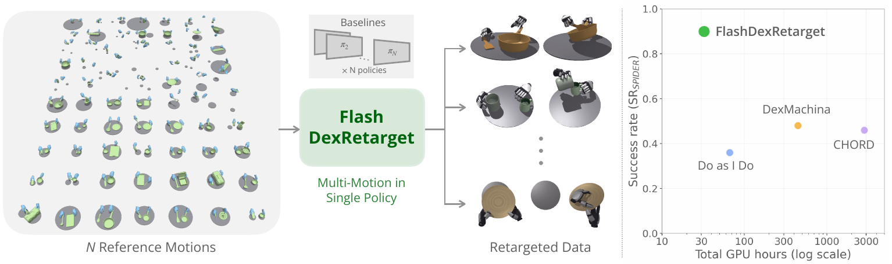
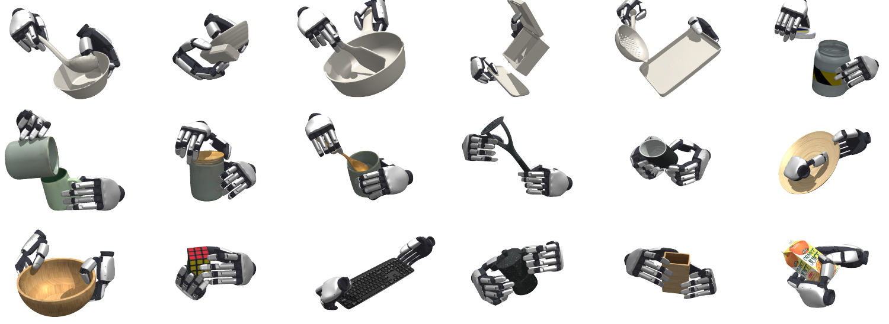
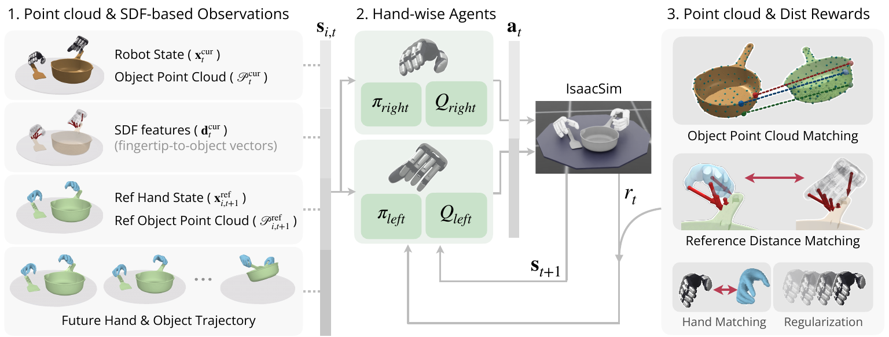
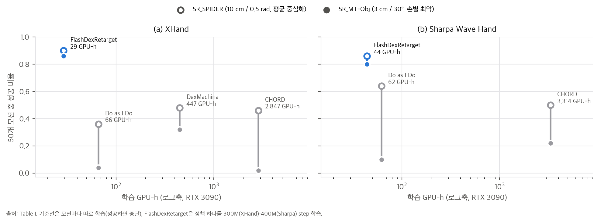
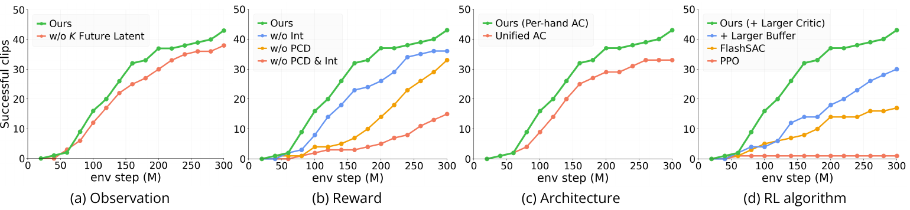
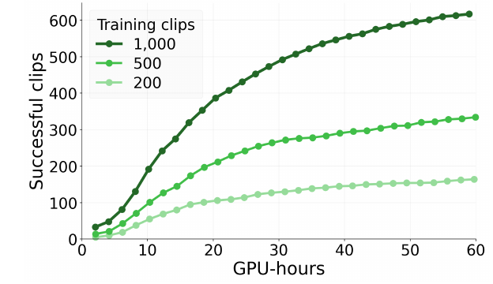
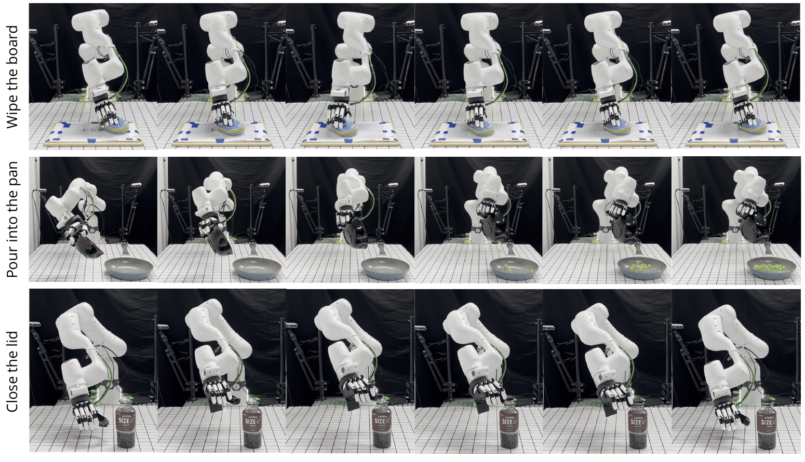
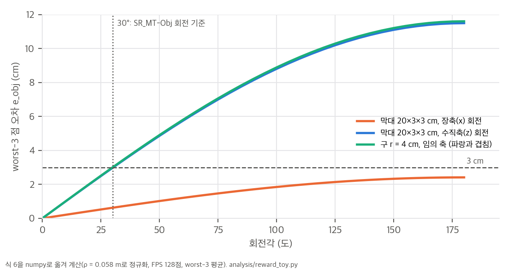

논문 Fig. 1: 사람 손-물체 시연 N개를 정책 하나로 리타겟팅한다. 오른쪽은 총 GPU-h(로그축) 대비 SR_SPIDER.

논문 Fig. 3: 정책 하나가 만든 시뮬레이션 리타겟 결과(도구 사용, 용기 조작, 일상 물체).
6f95e13, 2026-10-20, MIT) · 프로젝트 https://holiday-robot.github.io/FlashDexRetarget/rsl_rl_flashsac @ 9822b1b 포함). 부록은 없습니다.한 줄 요약: 사람 손-물체 시연(TACO, OakInk2, HOT3D) 여러 개를 하나의 레퍼런스 조건부 RL 정책으로 한꺼번에 추적하게 해서, 시연마다 최적화를 따로 돌리는 기존 물리 기반 리타겟팅의 비용 선형 증가를 없앴습니다. 성공한 rollout은 그대로 로봇 데이터로 저장합니다.
논문이 내세우는 기여는 세 가지입니다(Sec. I).
사람 시연 모음 D = {τ_i} (TACO·OakInk2·HOT3D, CHORD 전처리 → 운동학 리타겟으로 로봇 관절 레퍼런스)
│ 병렬 환경마다 레퍼런스 i와 시작 프레임을 무작위 배정 (reference state initialization)
▼
관측 s_{i,t} = ( s_t^cur , s_{i,t+1}^ref ) (Eq. 2–3)
s^cur = 로봇·물체 상태 x, 물체 점군 P (128점, 손목 좌표계), SDF 거리·법선 d (손끝 5 + 손목)
s^ref = 다음 프레임 레퍼런스 x, 레퍼런스 점군 P, 미래 K=10 프레임 latent z = Enc(x_{t+1:t+K}) (Eq. 4)
▼
왼손 (π_left, Q_left) · 오른손 (π_right, Q_right) ← 둘 다 전체 관측을 보고 자기 손 행동만 출력 (Eq. 8)
│ FlashSAC (off-policy), replay 50M, critic 폭 1024
▼
Isaac Sim → 손별 보상 r^h = w_obj·r^obj + w_int·r^int + w_track·r^track + w_reg·r^reg (Eq. 5–7)
▼
주기적 평가에서 성공 기준을 통과한 rollout을 로봇 데이터로 저장

논문 Fig. 2: 관측(점군, SDF, 레퍼런스, 미래 궤적) → 손별 actor-critic → 점군·거리 보상.
손 h마다 따로 정의합니다: r_t^h = w_obj r^obj + w_int r^int + w_track r^track + w_reg r^reg (Eq. 5).
(a) 물체 점군 정합 (Eq. 6). 위치 오차와 회전 오차를 손으로 정한 가중치로 섞는 대신, 대응점 사이 거리 하나로 측정합니다.
p̃_m = ρ · p_m / max_n ||p_n|| # 물체 크기를 반지름 ρ = 0.058 m로 정규화
e^obj = (1/k) Σ_{m ∈ worst-k} || P̃^cur_{t+1,m} − P̃^ref_{t+1,m} || (k = 3)
r^obj = exp(−e^obj / σ_obj), σ_obj = 0.1 m
ρ = 0.058 m는 "30° 회전이 약 3 cm 점 변위가 되도록" 고른 값이고, ManipTrans의 성공 기준(3 cm / 30°)과 맞추려는 의도입니다. 이 주장은 반지름 ρ인 점이 회전축에 수직일 때 정확히 성립합니다(현 길이 2ρ·sin 15° = 3.00 cm, 03 §1). 평균 대신 가장 큰 세 오차를 평균하는 이유는 큰 정렬 오차를 강조하기 위해서라고 설명합니다.
(b) 손-물체 상호작용 (Eq. 7). 복원된 사람 시연에서는 손가락이 물체 위에 떠 있거나 안으로 파고들어서, 고정 거리 임계값으로 접촉 레이블을 만들면 틀리기 쉽습니다. 그래서 이진 접촉 대신 연속 거리를 씁니다.
ε^(f) = max(0, d^(f) − d^{ref,(f)}) # 로봇 손끝 SDF 거리가 사람 손끝 거리보다 먼 만큼만 벌칙
r^int = (1/5) Σ_f exp(−ε^(f) / σ_int), σ_int = 0.01 m
사람 쪽 거리 d^ref는 메쉬의 가장 가까운 꼭짓점까지의 부호 없는 거리입니다. 한쪽 방향 벌칙이라 로봇은 사람보다 더 가까이 붙을 수 있고(복원 오차로 생긴 틈을 메울 수 있음), 사람 손끝이 물체에서 멀리 있으면 그 손가락 항은 사실상 꺼집니다.
(c) 손 추적과 (d) 정규화. 손목 위치·회전, 손끝 위치에 대한 지수 보상과, 명령 관절 위치가 운동학 리타겟과 같도록 하는 behavior-cloning 항을 둡니다(ManipTrans, DexMachina[8, 9]를 따름). 큰 행동에는 벌칙을 주고, 물체나 손끝이 레퍼런스에서 임계값 이상 벗어나 종료되면 벌칙을 줍니다. 시간 초과나 클립 종료로 끝난 경우에는 벌칙이 없습니다.
공식 설정(config/envs/rewards/flashdexretarget.yaml)의 가중치는 다음과 같습니다. 논문에는 가중치 값이 없습니다.
| 항 | 가중치 | 스케일 |
|---|---|---|
| 물체 점군 정합 r^obj | 1.0 | exp(−10·e), 즉 σ_obj = 0.1 m |
| 상호작용 r^int | 0.3 | σ_int = 0.01 m |
| 손목 위치 / 회전 | 0.15 / 0.15 | exp(−10·m) / exp(−3·rad) |
| 손끝 위치 | 0.3 | exp(−20·m) |
| 관절 BC | 0.3 | exp(−500·err) |
| 행동 크기 | −0.01 | 평균 제곱 |
| 실패 종료 | −50 | 원인이 된 손에만 부과 |
기존 RL 리타겟팅[7–9]은 두 손을 actor-critic 하나로 제어하고 보상을 합칩니다. 그러면 실패가 어느 손 때문인지 가리기 어렵습니다. 이 논문은 손마다 actor π_h와 critic Q_h를 따로 두고 자기 손 보상 r^h로 학습합니다. 다만 각 actor·critic은 두 손을 모두 포함한 전체 관측을 받습니다. 한 손이 잡은 물체가 다른 손의 물체와 부딪히는 식의 상호작용을 반영하기 위해서입니다.
PPO는 업데이트마다 전이를 버리므로 데이터 효율이 낮습니다. 저자들은 자신들의 off-policy 알고리즘 FlashSAC[11]을 쓰고, 여러 레퍼런스 때문에 넓어진 상태 분포에 맞춰 replay buffer를 기본 10M에서 50M 전이로, critic hidden 차원을 256에서 1024로 늘렸습니다. 코드상 나머지 설정은 γ = 0.98, 5-step return, 환경 스텝당 2회 업데이트, 배치 4096, 101-bin 범주형(distributional) critic, 병렬 환경 2,048개, 제어 주기 60 Hz입니다(config/runner/flashsac.yaml, config/envs/flashdexretarget.yaml).
scripts/retarget/50_motion_benchmark.sh에 고정되어 있어서 같은 집합을 다시 만들 수 있습니다. 총 26,387프레임(60 Hz로 7.3분, 클립 평균 8.8초)입니다.do_as_i_do/), DexMachina[9](RL + 물체 보조 커리큘럼, 저자들이 시작 상태를 레퍼런스 위 무작위 지점으로 바꿈), CHORD[7](RL, contact-wrench guidance, PPO)입니다. 공개 구현을 썼고, Sharpa에서는 DexMachina를 빼고 비교했습니다.| 방법 | 방식 | SR_SPIDER | SR_MT-Obj | SR_MT | MOPE (mm) | MORE (rad) | GPU-h |
|---|---|---|---|---|---|---|---|
| (a) XHand | |||||||
| Do as I Do | Single | 0.36 | 0.04 | 0.00 | 47.32 | 0.28 | 66 |
| DexMachina | Single | 0.48 | 0.32 | 0.12 | 37.49 | 0.29 | 447 |
| CHORD | Single | 0.46 | 0.02 | 0.00 | 55.70 | 0.16 | 2,847 |
| FlashDexRetarget | Multi | 0.90 | 0.86 | 0.86 | 10.95 | 0.25 | 29 |
| (b) Sharpa Wave | |||||||
| Do as I Do | Single | 0.64 | 0.10 | 0.10 | 58.33 | 0.24 | 62 |
| CHORD | Single | 0.50 | 0.22 | 0.00 | 60.07 | 0.19 | 3,314 |
| FlashDexRetarget | Multi | 0.86 | 0.80 | 0.80 | 16.45 | 0.32 | 44 |

우리 분석: Table I을 GPU-h(로그축)와 두 성공 기준으로 다시 그림. 빈 원 SR_SPIDER, 찬 원 SR_MT-Obj.
해석 (재계산은 04_code_verification.md §3과 analysis/table_check.py):
04 D5) BC 항을 두었기 때문에 손이 레퍼런스에서 크게 벗어나지 않는 것으로 보입니다.03 §2)도 한 원인 후보입니다.do_as_i_do/analysis/01_paper_analysis.md §3.2). 클립 구성과 전처리가 다르므로 직접 비교할 수는 없지만, 이 벤치마크가 더 어렵거나 기준선 설정이 불리했을 가능성은 남습니다.모두 XHand, 300M 스텝, 단일 실행입니다. 아래 수치는 그림에서 읽은 최종값의 근사입니다(50개 중 SR_MT-Obj 누적 성공 수).
| 비교 | 변형 | 최종 성공 (근사) | 전체 모델(43) 대비 |
|---|---|---|---|
| (a) 관측 | K 미래 latent 제거 | 약 38 | −5 |
| (b) 보상 | 상호작용 보상·SDF 관측 제거 | 약 36 | −7 |
| 점군 관측·정합 보상 제거(DexMachina식 물체 보상으로 대체) | 약 33 | −10 | |
| 둘 다 제거 | 약 15 | −28 | |
| (c) 구조 | 하나의 actor-critic(보상 합산) | 약 33 | −10 |
| (d) 알고리즘 | PPO | 약 0–1 | −42 |
| FlashSAC 기본(10M, 256) | 약 17 (본문 34%) | −26 | |
| + 50M buffer | 약 30 (본문 60%) | −13 |

논문 Fig. 4: 50개 모션 누적 성공(SR_MT-Obj). (a) 미래 latent (b) 보상 (c) 손별 actor-critic (d) 알고리즘.
200, 500, 1,000개 모션에 정책 하나씩을 600M 스텝 학습하고, 처음 60 GPU-h의 누적 성공을 보였습니다. 그림에서 읽은 60 GPU-h 시점 값은 약 165 / 335 / 610개입니다.
04 C11).
논문 Fig. 6: 200, 500, 1,000개 모음의 처음 60 GPU-h 누적 성공.
실제로 촬영한 사람 시연(칠판 닦기, 팬에 붓기, 뚜껑 닫기)을 리타겟팅하고, 시뮬레이션에서 성공한 궤적을 로봇팔 + XHand에서 재생했습니다. 프로젝트 페이지도 "닫힌 루프 정책 배포가 아니다"라고 명시합니다. 시행 횟수와 성공률은 보고되지 않았고, 로봇팔 IK나 물체 초기 배치 방법도 본문에 없습니다.

논문 Fig. 5: 시뮬레이션에서 성공한 궤적의 실제 재생(칠판 닦기, 팬에 붓기, 뚜껑 닫기).
비교적 깨끗한 사람 손-물체 궤적, 정확한 물체 형상, 시뮬레이터의 privileged 정보에 의존합니다. 향후 과제로 사람 영상 레퍼런스의 강건한 처리, 처음 보는 모션·embodiment로의 일반화, 자세 지표를 넘어선 과제 단위 평가, 실제 관측만으로 배포하기 위한 teacher-student 증류를 들었습니다.
04 D1). DexMachina식으로, 물체를 레퍼런스 자세로 끌어당기는 PD 힘을 주고(초기 kp 80) 보상과 완주율 조건을 만족하면 0.9배씩 줄입니다. 평가와 성공 저장은 보조 힘을 끈 상태에서 하므로 저장된 궤적은 물리적으로 유효합니다. 하지만 학습 속도와 성공률에 이 장치가 얼마나 기여했는지는 ablation이 없습니다. Fig. 4의 비교 대상 모두에 들어 있었는지도 본문만으로는 알 수 없습니다.04 D2). 링크 13개마다 힘·토크와 접촉 위치를 넣습니다. Eq. 3에는 없는 privileged 정보입니다. "w/o interaction reward" ablation은 SDF 특징만 빼므로, 접촉 정보 자체의 기여는 따로 측정되지 않았습니다. teacher-student 증류로 실제 배포하려면 이 입력을 무엇으로 대체할지가 핵심 문제가 됩니다.04 D3). SPIDER 공식 스크립트와 같은 정의라서 비교 자체는 공정합니다. 다만 "10 cm"라는 표현만 보면 알기 어려운 관대함이 있습니다. 시뮬레이션 물체가 처음부터 끝까지 일정하게 8 cm 어긋나 있어도 위치 오차는 0으로 계산됩니다.04 C10). 50M 행 replay buffer는 88 GB이므로 RTX 3090(24 GB)에서는 호스트 RAM에 두어야 하고, 이때 호스트 RAM이 약 100 GB 필요합니다. 기준선은 모션마다 독립 실행이라 값싼 GPU 여러 장에 나눠 돌릴 수 있지만, FlashDexRetarget은 큰 메모리를 가진 한 대에서 29시간을 연속으로 돌려야 합니다. GPU-h 총량은 작아도 wall-clock 병렬화 측면은 다릅니다.03 §2). 20×3×3 cm 막대를 장축으로 30° 돌려도 worst-3 오차는 0.62 cm(보상 0.94)이고, 180°를 돌려도 3 cm에 이르지 않습니다. 반면 성공 기준 SR_MT-Obj는 쿼터니언 각도 30°에서 실패로 칩니다. TACO에는 숟가락, 주걱, 붓 같은 길쭉한 도구가 많아서, 보상과 평가 기준 사이에 체계적인 어긋남이 생길 수 있습니다. MORE가 기준선보다 나쁜 것과 관련이 있는지는 가설입니다.재계산 스크립트는 analysis/reward_toy.py(보상 식, 결과 reward_toy_results.json)와 analysis/table_check.py(Table I과 계산량, 결과 table_check_results.json)입니다. 보상 식은 공식 코드 src/envs/rewards/motion_tracking.py의 _obj_pcd_match_error_exp와 tracking_ref_mano_tip_distance_bound_exp를 numpy로 줄 단위로 옮겨서 계산했습니다. 모두 CPU에서 몇 초 안에 끝납니다.
물체 좌표계 점 p_m에 대해 코드는 disp_m = (t_ref − t_sim) + (R_ref − R_sim) p̃_m를 계산합니다. 두 번째 항은 R_sim(R_simᵀR_ref − I)p̃_m이므로, 크기는 상대 회전 ΔR = R_simᵀR_ref로 점을 돌렸을 때의 변위와 같습니다. 회전축에서 점까지의 거리를 r_⊥, 회전각을 θ라고 하면 다음이 성립합니다.
|ΔR p − p| = 2 · r_⊥ · sin(θ/2)
정규화 p̃ = ρ·p / max‖p‖ 때문에 모든 점은 원점에서 ρ 이내에 있습니다. 따라서 순수 회전일 때 다음 상한이 생깁니다.
e_obj(순수 회전) ≤ 2ρ · sin(θ/2)
등호는 가장 먼 점들이 회전축에 수직인 평면 위에 있을 때만 성립합니다.
θ = 30°이면 2 × 0.058 × sin 15° = 3.002 cm입니다. 논문의 "30° 회전이 약 3 cm"는 위 상한과 정확히 일치합니다(Sec. III-B a). 같은 환산으로 1 rad는 약 5.56 cm에 해당합니다. 위치와 회전을 따로 가중하지 않아도 이 비율로 자동으로 섞입니다.
순수 병진 t에서는 모든 점이 같이 움직이므로 e_obj = ‖t‖입니다. 정리하면 e_obj는 "위치 오차 1 cm = 회전 약 10°(구형 물체 기준)"로 환산되는 단일 거리이고, 물체 크기와 무관합니다.
상한이 등호가 되는지는 물체 모양과 회전축에 달려 있습니다. 표본 128점(FPS, 코드와 같음)을 쓰고 30° 회전을 무작위 축 2,000개에 대해 계산했습니다.
| 형상 (정규화 전 크기) | worst-3 오차 min / 중앙값 / max (cm) | 2 cm 미만 비율 | 전체 평균을 쓰면 (중앙값) |
|---|---|---|---|
| 구 r = 4 cm | 3.00 / 3.00 / 3.00 | 0% | 2.36 cm |
| 정육면체 8 cm | 2.46 / 2.79 / 2.96 | 0% | 1.75 cm |
| 막대 20×3×3 cm | 0.64 / 2.76 / 2.99 | 16% | 1.48 cm |
| 판 16×16×1 cm | 2.13 / 2.80 / 2.97 | 0% | 1.31 cm |
| 원점이 중심에서 5 cm 벗어난 정육면체 | 1.44 / 2.85 / 2.96 | 4.5% | 1.67 cm |

막대를 장축으로 돌리는 경우가 사각지대입니다. 30° 회전의 오차는 0.62 cm(보상 0.94)이고, 90°는 1.70 cm, 180°를 돌려도 2.4 cm로 3 cm에 이르지 않습니다. 정규화 뒤 막대 단면의 최대 r_⊥가 ρ의 약 21%뿐이기 때문입니다.
해석:
| 양 | 값 |
|---|---|
| r_obj (e = 3 cm, 성공 기준) | 0.741 |
| r_obj (e = 10 cm) | 0.368 |
| 조기 종료 기준(5스텝 누적 r_obj < 0.6)에 해당하는 오차 | 5.11 cm |
| r_int 손끝 하나, 초과 거리 5 mm / 2 cm | 0.607 / 0.135 |
σ_obj = 0.1 m는 성공 기준 3 cm보다 훨씬 넓습니다. 성공 경계 근처에서 보상 기울기는 1 cm당 약 0.074라서 완만합니다. 대신 조기 종료가 5 cm에서 걸리므로, 실제로는 "넓은 보상 + 5 cm 종료 벽"으로 학습 신호를 만듭니다. 반대로 σ_int = 1 cm는 날카로워서, 손끝이 사람보다 1 cm만 멀어도 그 손가락 보상이 0.37로 떨어집니다.
한쪽 방향 벌칙의 자동 gate. 사람 손끝이 물체에서 5 cm 떨어져 있으면 로봇 손끝이 3 cm 거리에 있어도 만점입니다. 접촉하지 않는 손가락은 저절로 보상에서 빠지므로 이진 접촉 레이블이 필요 없습니다. 반대로 사람이 닿은(0 mm) 곳에서 로봇이 1 cm 떠 있으면 0.37입니다.
꼭짓점 거리의 여유. 사람 쪽 d_ref는 가장 가까운 메쉬 꼭짓점까지의 거리(build_motion_pt.tip_contacts, KD-tree)이고, 로봇 쪽 d는 표면까지의 SDF입니다. 사람 손끝이 표면에 정확히 닿아 있어도 d_ref는 0보다 크게 기록되고, 그만큼 로봇은 벌칙 없이 떨어져 있을 수 있습니다. 반지름 4 cm 구에서 꼭짓점 수에 따른 여유는 다음과 같습니다.
| 꼭짓점 수 | 평균 여유 | 95% 분위 여유 | σ_int 대비 (95%) |
|---|---|---|---|
| 500 | 3.17 mm | 6.07 mm | 0.61 |
| 2,000 | 1.59 mm | 3.15 mm | 0.31 |
| 8,000 | 0.78 mm | 1.50 mm | 0.15 |
| 32,000 | 0.40 mm | 0.79 mm | 0.08 |
스캔 메쉬처럼 꼭짓점이 촘촘하면 무시할 만합니다. 꼭짓점이 수백 개인 저폴리 메쉬에서는 σ_int의 절반을 넘는 여유가 생겨, 접촉 보상이 체계적으로 관대해집니다.
SDF 격자. 128³ 격자가 ±0.30 m를 덮으므로 voxel은 4.72 mm입니다. 반지름 4 cm 구에서 삼선형 보간 오차의 99% 분위는 0.23 mm로 σ_int보다 훨씬 작습니다. 매끈한 형상에서는 해상도가 문제가 되지 않습니다. 다만 voxel보다 얇은 벽(냄비 가장자리, 얇은 판)은 이 toy로 확인하지 않았습니다.
성공 1건당 GPU-h (XHand):
| 방법 | 시도 1건당 | SR_SPIDER 성공 1건당 | SR_MT-Obj 성공 1건당 |
|---|---|---|---|
| Do as I Do | 1.32 | 3.67 | 33.0 |
| DexMachina | 8.94 | 18.6 | 27.9 |
| CHORD | 56.9 | 123.8 | 2,847 (1건) |
| FlashDexRetarget | 0.58 | 0.64 | 0.67 |
엄격한 기준(SR_MT-Obj)으로 보면 비용 차이는 "100배"가 아니라 DexMachina 대비 약 42배, CHORD 대비 수천 배입니다. 기준선은 싸게 실패하거나(Do as I Do) 비싸게 실패합니다(CHORD).
레퍼런스 길이 대비 학습량: 50개 클립은 총 26,387프레임(60 Hz로 7.3분)입니다. 300M 스텝이면 레퍼런스 프레임 하나당 약 11,400번 방문하고, 레퍼런스 1초당 237 GPU-초를 씁니다. 처리량은 XHand 초당 2,874 env step(2,048개 환경이면 초당 1.4번 수집 + 2.8번 업데이트), Sharpa 초당 2,525 step입니다.
확장 시 효율: 1,000개 모음은 60 GPU-h에 600개 이상을 변환합니다(GPU-h당 10개 이상, 프로젝트 페이지). 50개 실험(GPU-h당 1.48개)의 6.7배입니다. 같은 처리량이면 600M 스텝이 약 58 GPU-h이므로, Fig. 6의 60 GPU-h는 학습 예산 거의 전체입니다.
메모리: replay buffer는 백만 행당 1.76 GB(코드 문서)라서 50M 행은 88 GB이고, 기본 FlashSAC 10M 행도 17.6 GB입니다. 버퍼를 뺀 시뮬레이션과 네트워크가 약 16 GB이므로, RTX 3090(24 GB)에서는 10M 설정조차 GPU에 다 올라가지 않습니다. 논문 실험은 버퍼를 호스트 RAM에 둔 설정(buffer_device_type=cpu, RAM 약 100 GB)이었을 것으로 보입니다. 논문에는 이 요구가 적혀 있지 않습니다.
Holiday-Robot/FlashDexRetarget @ 6f95e13 (2026-10-20), 서브모듈 Holiday-Robot/rsl_rl_flashsac @ 9822b1b. 비교용으로 facebookresearch/spider의 spider/postprocess/get_success_rate.py @ 4471700을 확인했습니다.| 논문 | 구현 위치 | 일치 여부 |
|---|---|---|
| 정책 하나를 전체 시연에 공동 학습, 병렬 환경에 레퍼런스 배정 (Eq. 1–2) | src/envs/commands/motion_tracking/, sampling.mode: uniform |
✅ 시작 프레임도 레퍼런스 위에서 균일하게 뽑습니다 |
| 물체 점군 128점, 손목 좌표계 (Sec. III-A) | observations/motion_tracking.py: obj_point_cloud_wrist |
✅ 점은 2,048개 꼭짓점에서 FPS로 뽑습니다(D6) |
| SDF 거리·법선, 128³ 격자, 60 cm | utils/sdf.py, robot_links_obj_sdf (palm + 손끝 5), sdf.grid_n: 128, extent: 0.30 |
✅ |
| K = 10 미래 프레임 → 128차원 latent (Eq. 4) | agents/modules/traj_encoder.py (Conv1D, aggregation: conv1d), ref_future_traj_wrist (n_future: 10, stride: 1) |
✅ |
| 물체 점군 정합 보상 (Eq. 6): ρ = 0.058, k = 3, σ_obj = 0.1 | rewards/motion_tracking.py: _obj_pcd_match_error_exp, reward_params: {topk: 3, norm_radius: 0.058}, scale: 10.0 |
✅ 식과 정확히 일치합니다 |
| 상호작용 보상 (Eq. 7): σ_int = 0.01, 손끝 5개 | tracking_ref_mano_tip_distance_bound_exp (sigma=0.01) |
✅ |
| 사람 손끝 거리 = 가장 가까운 꼭짓점까지 부호 없는 거리 | retarget/build_motion_pt.py: tip_contacts (KD-tree) |
✅ |
| 손 추적 + 관절 BC, 행동·종료 벌칙 | 손목 위치·회전, 손끝, tracking_joint_pos_bc_exp, action_penalty, termination_penalty |
✅ 가중치는 논문에 없습니다(D9) |
| 손별 actor-critic, 전체 관측, 자기 손 행동만 출력 (Eq. 8) | SideFactoredActor(손마다 ActorTower), MultiHeadCritic(손 × twin 앙상블), _gate_actions |
✅ 세부 구조는 D8 |
| FlashSAC, buffer 50M, critic 1024 | config/runner/flashsac.yaml: buffer_max_length: 50_000_000, critic_hidden_dim: 1024 |
✅ |
| 성공 기준 SR_MT, SR_MT-Obj, SR_SPIDER | evaluation/callbacks/tracking_performance.py |
✅ 정의 세부는 D3, D4 |
| 누적 성공: 한 번이라도 통과한 rollout을 저장 | evaluation/evaluate.py: _ever_success, _archive_success, eval.interval: 20_000_000 |
✅ |
| 50개 모션 (물체 하나 25, 두 물체 25) | scripts/retarget/50_motion_benchmark.sh (TACO 10, OakInk2 15, HOT3D 25) |
✅ 클립 이름과 프레임 수까지 고정 |
| # | 내용 | 영향 |
|---|---|---|
| D1 | 물체 보조 힘 커리큘럼이 기본으로 켜져 있습니다. commands.object.pin_objects: true, pin_mode: xfrc이고, curriculum.xfrc_curriculum_adaptive가 물체를 레퍼런스 자세로 당기는 PD wrench(초기 kp 80, kv 5, 힘 상한 50 N, 회전 강성 ×96)를 겁니다. 과제·모방·BC 보상 평균이 임계값(0.6 / 0.01 / 0.01)을 넘고 완주율이 0.65 이상이면 0.9배씩 줄입니다. 직전 이득의 0.98배로 되돌리는 dial-back 코드도 있지만, 이 설정에서는 실행되지 않습니다. _set_curriculum이 감쇠 조건(완주율 ≥ 0.65)을 통과한 뒤에만 dial-back(완주율 < 0.5)을 검사하기 때문입니다. 따라서 보조 힘은 줄어들기만 합니다. 환경마다 [하한, 상한]에서 이득을 무작위로 뽑습니다. 이득 하나를 모든 모션이 공유합니다(src/envs/curriculum/assist.py). |
논문 Method에는 언급이 없습니다. DexMachina[9]의 핵심 장치와 같은 계열이라 기여 귀속에 중요합니다. 평가는 disable_object_pin: true로 보조 없이 하므로 저장된 궤적은 물리적으로 유효합니다. 그러나 학습 효율에 대한 기여는 ablation이 없습니다. |
| D2 | 정책 관측에 접촉 wrench와 접촉점이 있습니다. actor·critic 모두에 robot_body_contact_wrench_wrist(손당 링크 13개 × 힘·토크 log-norm 8 = 104차원)와 robot_body_contact_trans_wrist(링크별 가장 깊은 접촉점, 39차원)가 들어갑니다. 물체 위치·회전·속도(obj_trans_wrist 등)도 actor 관측입니다. |
Eq. 3에는 x^cur, P^cur, d^cur만 있습니다. 저자가 한계에서 말한 "privileged 정보"의 실체입니다. "w/o interaction reward"는 SDF 특징만 빼므로 접촉 관측의 기여는 측정되지 않았습니다. 실제 배포용 증류에서 대체할 입력이 필요합니다. |
| D3 | SR_SPIDER는 위치 오차에서 궤적 평균 오프셋을 뺍니다. _spider_errors가 시뮬레이션−레퍼런스 차이에서 그 시간 평균을 빼고 노름의 평균을 냅니다. 평균 이동량이 1 mm 미만인 쪽 물체는 빼고, 나머지 두 쪽을 평균합니다. SPIDER 공식 스크립트도 양손 모드에서 궤적과 레퍼런스를 각각 평균 중심화하므로 수학적으로 같은 정의입니다(한 손 모드에서는 중심화하지 않음). |
기준선과 같은 지표라 비교는 공정합니다. 다만 일정한 위치 오프셋은 아무리 커도 오차로 잡히지 않습니다. 논문의 "10 cm"를 원점 기준 절대 오차로 읽으면 안 됩니다. |
| D4 | SR_MT·SR_MT-Obj는 궤적 시간 평균 오차(첫 15스텝 = 0.25 s 제외)에 임계값을 적용하고, 두 손 가운데 나쁜 쪽이 통과해야 합니다. | ManipTrans Sec. 4.1의 정의(오차를 T 프레임 평균으로 정의하고 한 손이라도 실패하면 실패)와 같습니다. 불일치는 아닙니다. 다만 "3 cm 이내"가 매 프레임 조건이 아니라 평균 조건이라는 점은 본문만으로는 드러나지 않습니다. |
| D5 | 행동 공간이 운동학 레퍼런스 기준 잔차입니다. 손목 위치는 ref + 0.1·a(m), 손목 회전은 ref + 1.0·a(rad)이고 5 Hz 저역통과 필터를 겁니다. 손가락은 잔차 없이 a ∈ [−1, 1]을 관절 범위에 대응시킵니다(config/envs/actions/flashdexretarget.yaml). |
논문에 행동 공간 설명이 없습니다. 손목이 레퍼런스 근처에 묶이므로 SR_MT = SR_MT-Obj(01 §3.2)인 결과를 설명합니다. 다른 손이나 팔에 이식할 때 바꿔야 할 핵심 설계입니다. |
| D6 | 레퍼런스 점군은 원래 좌표가 아니라 점별 **차이(다음 레퍼런스 − 현재 시뮬레이션)**로 줍니다(ref_future_obj_point_cloud_delta_wrist). 점은 "균일 샘플"이 아니라 FPS로 뽑습니다. |
정보량은 같습니다. 재구현할 때 입력 표현을 맞추려면 필요합니다. |
| D7 | 조기 종료 규칙은 다음과 같습니다. 5스텝 누적 점군 보상 < 0.6(오차 약 5.1 cm, 03 §3), 손끝이 레퍼런스에서 0.2 m 이상 벗어남(유예 15스텝), 물체가 레퍼런스보다 0.10 m 아래로 떨어짐, 물리 이상(속도 폭주, NaN). 실패 종료 벌칙 −50은 원인이 된 손에만 매깁니다. |
논문은 "미리 정한 임계값"이라고만 적었습니다. 점군 보상 기반 종료가 학습 신호의 상당 부분을 만들 가능성이 큽니다. |
| D8 | 손별 critic은 [twin 2개 × 손 2개] = 4개 멤버를 하나의 앙상블 연산으로 묶었고, 멤버마다 가중치가 따로입니다. critic의 미래 궤적 인코더는 네 멤버가 공유하고, actor는 손마다 인코더를 따로 둡니다. 엔트로피 온도도 손마다 따로입니다. critic h는 손 h의 행동 차원으로만 미분되도록 나머지 행동을 detach합니다(_gate_actions). |
논문 설명과 맞습니다. 인코더 공유 같은 세부는 논문에 없습니다. |
| D9 | 보상 가중치와 스케일이 논문에 없습니다(01 §2.3 표). 물체 1.0, 상호작용 0.3, 손목 0.15 + 0.15, 손끝 0.3, BC 0.3입니다. | 재현하려면 설정 파일이 필수입니다. |
| D10 | 도메인 랜덤화와 관측 잡음이 모두 꺼져 있습니다(events: no_domain_rand, noise_scales 전부 0, ref_noise.enable: false). |
리타겟팅이 목적이라 합리적입니다. 다만 실제 로봇 재생(Fig. 5)은 랜덤화 없이 찾은 open-loop 궤적입니다. |
| D11 | 운동학 리타겟은 MuJoCo equality 제약으로 풉니다. 손바닥·물체는 weld, 손끝은 connect이고, 약지·소지 제약은 폭을 따로 조정합니다(retarget/robot_hand/ik.py). |
논문은 "CHORD의 전처리를 따름"이라고만 적었습니다. BC 항의 목표가 이 결과이므로 품질에 직접 영향을 줍니다. |
| D12 | 기본 num_env_steps는 500M입니다(config/runner/base.yaml). 논문의 300M(XHand), 400M(Sharpa)을 재현하려면 덮어써야 합니다. 대신 eval.stop_when_all_solved: true라서 모든 클립이 성공하면 일찍 끝납니다. |
사소하지만 GPU-h를 비교할 때 주의해야 합니다. |
| D13 | 리셋할 때 레퍼런스 클립을 균등하게 다시 뽑습니다(_resample_command의 torch.randint). 이미 성공해서 저장된 클립도 같은 확률로 계속 학습 예산을 씁니다. 어려운 클립을 더 자주 뽑는 우선순위 샘플링은 없습니다. |
모음이 커질수록 변환 비율이 떨어지는 Fig. 6 결과와 관련될 수 있습니다. 개선 여지가 큰 지점입니다. |
analysis/table_check.py, analysis/reward_toy.py)| # | 주장 (출처) | 재계산 | 판정 |
|---|---|---|---|
| C1 | CHORD 대비 계산량 약 100배 (Abstract) | XHand 2,847 / 29 = 98.2배, Sharpa 3,314 / 44 = 75.3배 | XHand만 ✅ |
| C2 | 성공률 +44%p (Abstract) | XHand 0.90 − 0.46 = 44%p, Sharpa 0.86 − 0.50 = 36%p | XHand만 ✅ |
| C3 | 모든 기준선보다 40%p 이상 (Sec. IV-B) | XHand 최소 격차 0.90 − 0.48 = 42%p | ✅ |
| C4 | Do as I Do보다 약 2배 적은 계산 (Sec. IV-B) | XHand 2.28배, Sharpa 1.41배 | XHand만 ✅ |
| C5 | 두 손 모두 기준선보다 적은 계산 | XHand, Sharpa 모두 성립 | ✅ |
| C6 | Sharpa 86% vs 64% / 50%, SR_MT 80% vs 10% / 0% | 표와 일치 | ✅ |
| C7 | 표 내부 일관성 | 모든 SR × 50이 정수이고(예: 45, 43, 43), 모든 행에서 SR_MT ≤ SR_MT-Obj | ✅ |
| C8 | 차이가 유의한가 | FlashDexRetarget SR_SPIDER 45/50, Wilson [0.79, 0.96]. 최강 기준선 DexMachina 24/50, [0.35, 0.62]. Fisher p = 8.6×10⁻⁶. SR_MT-Obj 43 vs 16, p = 5.3×10⁻⁸ | ✅ 매우 유의 (단일 시드, 비대응 근사) |
| C9 | 성공 1건당 GPU-h | SR_MT-Obj 기준 FlashDexRetarget 0.67, DexMachina 27.9, Do as I Do 33.0, CHORD 2,847 | 03 §5 |
| C10 | 하드웨어 요구 | 버퍼 50M 행 = 88 GB, 기본 10M = 17.6 GB. RTX 3090(24 GB)에는 둘 다 GPU에 못 올림 → 호스트 RAM 약 100 GB 필요 | 논문에 없는 요구 |
| C11 | 1,000개 중 600개 이상을 60 GPU-h에 (프로젝트 페이지) | GPU-h당 10개 이상 = 50개 실험의 6.7배. 600M 스텝 ≈ 58 GPU-h라 60 GPU-h는 예산 거의 전체 | ✅ (해석 주의) |
| C12 | MOPE·MORE 비교 | SR_SPIDER 통과 궤적만의 평균이라 표본 크기가 다름(XHand 18 / 24 / 23 / 45) | 직접 비교 주의 |
| C13 | 학습량 | 50개 클립 = 26,387프레임(7.3분), 레퍼런스 프레임당 약 11,400 env step | 참고 |
| V1 | ρ = 0.058 m면 30° ≈ 3 cm (Sec. III-B a) | 2ρ·sin 15° = 3.002 cm | ✅ (회전축에 수직인 점 기준) |
| V2 | 점군 정합이 위치와 회전을 하나의 단위로 측정 | 형상·축에 따라 30°가 0.62–3.0 cm. 막대 장축 회전에서 거의 보이지 않음 | ⚠️ 03 §2 |
| 항목 | 요구 사항 | 비고 |
|---|---|---|
| GPU | NVIDIA CUDA GPU. 기본 설정은 GPU 메모리 약 110 GB(버퍼 88 GB 포함). buffer_device_type=cpu로 두면 GPU 약 16 GB |
110 GB는 단일 H100 80 GB에도 들어가지 않습니다. 24–48 GB급 GPU라면 버퍼를 호스트 RAM에 둬야 합니다 |
| 호스트 RAM | 버퍼를 CPU에 두면 약 100 GB(pinned 88 GB) | 128 GB 이상 서버급 머신이 현실적입니다 |
| 시간 | XHand 50개 모션 29 GPU-h, Sharpa 44 GPU-h (RTX 3090 기준) | 실행 한 번에 하루 이상 걸립니다 |
| 소프트웨어 | Linux, conda, Python 3.11, Isaac Sim 5.1 / Isaac Lab 2.3, torch 2.7 cu128, warp 1.10. setup.sh가 고정 버전을 --no-deps로 설치 |
macOS는 Isaac Sim을 지원하지 않습니다. 일반 pip install을 쓰면 환경이 깨진다고 README가 경고합니다 |
| 데이터 | TACO, OakInk2, HOT3D 원본 + MANO 모델(등록 후 수동 다운로드) | 저장소에 모션 데이터가 없습니다. 각 데이터셋과 MANO의 라이선스를 따로 확인해야 합니다 |
| 라이선스 | 코드 MIT, Sharpa 자산 Apache 2.0, mjlab vendored 코드 Apache 2.0 | 코드 자체의 연구 사용 제약은 거의 없습니다 |
판단: 공식 코드는 설정, 벤치마크 클립 목록, 평가 코드까지 갖추고 있어서 재현에 필요한 정보는 충분히 공개되어 있습니다. 다만 Linux + 대용량 메모리 GPU 서버가 필요하므로, 이 맥에서는 학습 재현이 불가능합니다. 우리 저장소 규칙(GPU 재현 금지)에 따라 여기서는 하지 않았습니다.
| 단계 | CPU 가능 여부 | 근거 |
|---|---|---|
| 보상·관측 식 검증 | ✅ 완료 | reward_toy.py (numpy, 몇 초) |
사람 시연 import → 운동학 리타겟 → motion.pt |
✅ 가능할 것으로 보임 | 이 단계는 numpy, scipy, trimesh, MuJoCo, torch(MANO)만 씁니다. SDF 굽기에는 sdf.device=cpu 옵션이 있습니다. USD 변환은 Isaac이 필요하므로 끄고(steps.usd=false) 돌려야 합니다. 클립 몇 개면 데이터 일부만 받아도 됩니다 |
| 사람 손끝-물체 거리 분포 분석 | ✅ 위 단계 결과로 가능 | Eq. 7의 d_ref 분포(떠 있는 손가락, 파고든 손가락 비율)를 정량화할 수 있습니다 |
| RL 학습 (FlashSAC + Isaac Sim) | ❌ | GPU 물리 시뮬레이션과 대용량 버퍼가 필요합니다 |
공식 코드를 쓰지 않고 아이디어만 옮긴다면, 필요한 구성 요소와 난이도는 다음과 같습니다.
| 구성 요소 | 난이도 | 메모 |
|---|---|---|
| 점군 정합 보상 (Eq. 6), 한쪽 방향 거리 보상 (Eq. 7) | 낮음 | 수십 줄입니다. 레퍼런스 거리의 꼭짓점 여유(03 §4)와 장축 회전 사각지대(03 §2)를 같이 고려해야 합니다 |
| 미래 K 프레임 Conv1D 인코더 | 낮음 | traj_encoder.py 약 100줄 |
| 손별 actor-critic + 행동 gating | 중간 | 앙상블 critic과 손별 온도까지 맞추려면 FlashSAC 구조를 알아야 합니다 |
| 잔차 행동 공간, 물체 보조 커리큘럼, 조기 종료 규칙 | 중간 | 논문에 없고 코드에만 있습니다(D1, D5, D7). 재구현 성능을 좌우할 가능성이 큽니다 |
| 대규모 off-policy 학습 (50M 버퍼, 2,048 env, 업데이트 2회/스텝) | 높음 | 메모리와 처리량을 맞추는 엔지니어링이 핵심입니다. Fig. 4(d)에서 버퍼와 critic 크기가 성능 차이의 대부분을 만들었으므로 줄이면 성능이 떨어질 것으로 예상합니다 |
| 다른 로봇손 이식 | 중간 | MJCF/URDF에 손끝·손바닥 site 추가, 관절 그룹 정의(config/envs/robot/*.yaml), USD 변환. Sharpa 이식 과정이 assets/robot/sharpa/README.md에 정리되어 있습니다 |
요약: 아이디어 수준의 구현은 어렵지 않습니다. 하지만 논문 성능을 얻으려면 논문에 없는 세 가지(물체 보조 커리큘럼, 잔차 행동 공간, 접촉 관측)와 대용량 off-policy 인프라를 함께 가져와야 합니다. 현실적인 경로는 공식 코드를 GPU 서버에서 그대로 돌리고, 바꾸고 싶은 부분만 수정하는 것입니다.
번호 [n]은 논문의 참고문헌 번호이고, arXiv ID는 논문 참고문헌 목록에 적힌 값을 그대로 옮겼습니다. SPIDER의 성공률 스크립트(§2)와 ManipTrans의 지표 정의(§2)는 원문과 코드를 직접 확인했습니다. 나머지 논문은 따로 열어 검증하지 않았습니다.
[물리 기반 리타겟팅: 시연마다 따로 최적화]
├─ sampling 계열 CEM [27] · MPPI [28] · Predictive Sampling [29]
│ → DROP [30], ExoStart [31]
│ → SPIDER [6] arXiv:2511.09484 가상 접촉력 + annealed sampling
│ → Do as I Do [5] arXiv:2606.19333 영상 복원 + warmup·교란·전이 보상 (이 저장소 do_as_i_do/)
└─ RL 계열 (모션마다 정책 하나)
DexMV [32] → ManipTrans [8] (사전학습 imitator + residual)
→ DexMachina [9] arXiv:2505.24853 (물체 보조 힘을 점차 줄이는 커리큘럼)
→ CHORD [7] arXiv:2607.00033 (contact-wrench guidance, PPO)
[휴머노이드 전신 추적: 정책 하나로 많은 모션]
SONIC [10] (multi-motion tracking 규모 확장) · KungfuBot2 [38], PHUMA [39] (짧은 미래 프레임 조건)
[대규모 off-policy RL]
FlashSAC [11] (같은 그룹, RSS 2026)
▼ 세 갈래를 합침
★ FlashDexRetarget: 손-물체 리타겟팅을 multi-reference tracking으로, FlashSAC로 학습
차별점 요약: 손 리타겟팅 쪽 선행연구는 sampling이든 RL이든 모두 시연 하나에 최적화 하나입니다. 휴머노이드 쪽은 이미 정책 하나로 수천 개 모션을 추적합니다(SONIC). 이 논문은 그 정식화를 손-물체 상호작용으로 옮기면서 생기는 문제를 짚습니다. 물체마다 모양이 다르고, 복원된 접촉이 부정확하고, 상태 분포가 넓어지고, 두 손의 역할이 비대칭입니다. 각 문제에 장치를 하나씩 붙였습니다(01 §2).
| 역할 | 출처 | 이 논문에서의 쓰임 |
|---|---|---|
| multi-reference tracking 정식화 | SONIC [10] (휴머노이드) | 손-물체 시연 모음 전체에 정책 하나 |
| 미래 K 프레임 조건 | KungfuBot2 [38] arXiv:2509.16638, PHUMA [39] | K = 10, Conv1D 인코더 → 128차원 |
| 시작 상태 무작위화 | 레퍼런스 위 무작위 프레임에서 시작 (코드 sampling.mode: uniform) |
DexMachina 기준선도 같은 방식으로 수정함 |
| 손 추적 + 관절 BC 보상 | ManipTrans [8], DexMachina [9] | 손목·손끝 지수 보상, 운동학 리타겟과의 BC |
| 물체 보조 힘 커리큘럼 (코드에만 있음) | DexMachina [9]의 가상 물체 제어기 감쇠 | xfrc PD, kp 80에서 시작해 0.9배씩 감쇠 (04 D1) |
| 성공 기준 SR_MT | ManipTrans [8] arXiv:2503.21860 | 3 cm / 30° / 6 cm / 8 cm. ManipTrans Sec. 4.1도 궤적 평균 오차에 임계값을 적용하고, 양손이면 한 손이라도 실패하면 실패로 셈 |
| 성공 기준 SR_SPIDER | SPIDER [6], spider/postprocess/get_success_rate.py |
10 cm / 0.5 rad. 양손 모드에서 위치를 궤적 평균으로 중심화하고 정지한 쪽 물체를 뺌 (04 D3) |
| off-policy 학습기 | FlashSAC [11] (Holiday-Robot/rsl_rl_flashsac @ 9822b1b) |
101-bin 범주형 critic, twin-Q 앙상블, 버퍼 50M, critic 1024 |
| 데이터 | TACO [2], OakInk2 [3], HOT3D [4] | CHORD [7]의 전처리 절차 |
| 시뮬레이터·환경 틀 | Isaac Sim 5.1 / Isaac Lab 2.3, mjlab의 manager 구조(코드에 vendored) | 관측·보상·종료·커리큘럼 manager |
| 운동학 리타겟 | 코드 src/retarget/robot_hand/ik.py (MuJoCo equality 제약: 손바닥·물체는 weld, 손끝은 connect) |
논문 본문에는 설명 없음 |
| 논문 | 관계 |
|---|---|
Do as I Do (do_as_i_do/) |
직접 기준선입니다. Table I에서 가장 싼 기준선(66 / 62 GPU-h)이지만 SR_MT-Obj는 0.04 / 0.10입니다. 두 방법은 경쟁이면서 보완 관계이기도 합니다. Do as I Do의 앞단(단안 영상 → 4D 손-물체 궤적)은 FlashDexRetarget이 향후 과제로 남긴 "사람 영상 레퍼런스의 강건한 처리"와 정확히 맞물립니다. 우리 do_as_i_do 분석에서 본 SPIDER 기준의 관대함(평균 10 cm 통과, 높이 차이를 못 잡음)이 이 논문에서는 SR_MT-Obj와 SR_SPIDER의 큰 격차로 드러납니다. |
DexScrew (dexscrew/) |
시뮬레이션 RL로 손가락 기술을 배우는 PPO·IsaacGym 계열입니다. 이 논문의 Fig. 4(d)는 multi-reference 설정에서 같은 스텝 예산이면 PPO가 거의 0이라는 결과입니다. 한 과제만 학습하는 DexScrew 설정에 그대로 적용되지는 않지만, 상태 분포가 넓은 RL에서 off-policy와 큰 critic을 먼저 검토할 근거가 됩니다. |
GPT-as-Tactile-Policy (gpt6_astra_tactile/) |
FlashDexRetarget의 정책은 링크별 접촉 wrench를 관측으로 씁니다(04 D2). 시뮬레이션의 privileged 촉각에 해당합니다. 실제 배포로 가는 teacher-student 단계에서 촉각 센서 입력이 그 자리를 대신할 수 있는지가 두 연구를 잇는 질문입니다. |
Hydra-0 (hydra0/) |
둘 다 로봇 데이터 부족을 다루지만 경로가 다릅니다. Hydra-0은 생성 world model로, FlashDexRetarget은 사람 시연을 물리 시뮬레이션으로 검증된 로봇 궤적으로 바꿔서 접근합니다. |
| 주제 | 관련성 | 근거 수준 |
|---|---|---|
| PHC / PULSE (Luo et al., 휴머노이드 다중 모션 모방) | SONIC 이전의 "정책 하나로 대규모 모션 데이터셋 추적" 계보입니다. 실패한 모션에 전문가를 덧붙이는 방식 같은 운영 요령이 손 리타겟팅에도 바로 적용될 수 있습니다. | 내 사전 지식. 서지 확인 필요 |
| DeepMimic (Peng et al., 2018)의 reference state initialization | 코드의 무작위 시작 프레임 샘플링이 같은 기법입니다. | 내 사전 지식. 서지 확인 필요 |
| ADD / ADD-S (6-DoF 자세 추정 지표) | Eq. 6은 대응점 거리의 worst-k 평균이라 ADD의 변형입니다. 대칭 물체에는 ADD-S(가장 가까운 점 거리)가 쓰입니다. 대칭 도구가 많은 데이터에서는 ADD-S식 보상이 회전 대칭 문제(03 §2)를 자연스럽게 다룹니다. SPIDER 스크립트도 ADD-AUC10을 함께 계산합니다. |
내 해석. SPIDER 코드에서 ADD-AUC10 확인 |
| 다중 과제 RL의 간섭 (예: PCGrad 계열) | 레퍼런스가 많아질수록 변환 비율이 떨어지는 Fig. 6 결과(82% → 61%)는 과제 간 간섭이나 용량 한계로 읽을 수 있습니다. | 내 해석 |
한계: 4절의 서지 정보는 내 사전 지식에 근거합니다. 블로그나 git에 올리기 전에 원문을 직접 확인해야 합니다.